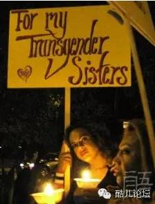
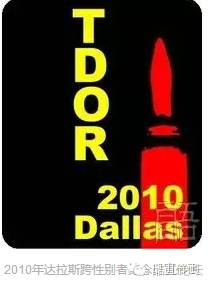

今天是11月20日
国际跨性别纪念日
日期为11月20日
英文：Transgender Day of Remembrance
它的设立是为了纪念因对跨性别的憎恨或偏见而遭杀害的跨性别朋友
本文转自微信公众号：同语
创立背景：
1998年11月，Rita Hester成为针对跨性别者的仇恨谋杀的又一个牺牲者，她的死引发了“记住我们的逝者”网络活动和1999年在旧金山举行的大规模烛光守夜。从此，每年的11月20日成为“跨性别者纪念日”(Transgender Day of Remembrance，简称TDOR)，一个缅怀跨性别恐惧受害者和仇恨犯罪罹难者的日子。Rita Hester的死如同大多数反跨性别的谋杀案件，至今尚未有结果。
创立意义：
它增进了公众对跨性别者所遭受的仇恨暴力的认知，而这是大众媒体很少涉及的内容。它让我们不至忘却在暴力中失去的生命，遗忘将是这些无辜生命的第二次死亡。通过烛光守夜，我们表达着对所有跨性别者的爱与尊重，这种力量将帮助他们抵御社会的冷漠与敌视。所有烛光守夜活动的参与者，无论其性倾向、性别身份及性别表达，都将感受到一种团结，而团结是我们战胜暴力的希望所在。
创立目的：
它要唤起大众对于反跨性别仇恨犯罪的觉知，这是不受目前媒体所呈现的事件。
国际跨性别纪念日公开地为这些被遗忘的、曾经活生生的跨性别兄弟与姊妹们致敬。透过烛光守夜，我们向他们表达爱与敬意。
国际跨性别纪念日提醒非跨性别的朋友，我们是他们的儿子、女儿、父母、朋友以及情人。
国际跨性别纪念日给我们 一个更进一步的机会，站在烛光守夜的行列中一起纪念那些因为反跨性别暴力而离开人世 的跨性别朋友们。
跨性别者纪念日中的“跨性别”一词所指广泛，包括变性人、扮装者以及其他的性别异类。他们都面临着暴力威胁，暴力的根源是对不符合性别规范者的歧视和仇恨。
在过去的十年中，美国平均每月就有一人死于针对跨性别者的仇恨犯罪。暴力的趋势没有缓和的迹象。
虽然不是每一个性别身份与众不同的人都认同“跨性别”这个称谓——Ta们或许更喜欢以其他为数众多的描述性别异类的词语自称——但是，所有在性别身份和性别表达上超越传统、突破主流的个体，都面临着歧视的压力甚至暴力的威胁，并因此在安身立命的路途上举步维艰。
跨性别者纪念日给了我们一个机会，不仅去铭记那些逝去生命的多姿与美好，更要拥抱我们邻人和我们自身的独特与尊严。只有当更多的人了解到多元的价值，我们每一个人才能在一个和而不同的世界里，活得安好，活得真实，活得精彩！
如果仇恨暴力的逻辑在于“有些生命本就低贱”，那么，记住这些生命曾经的存在，就是对这种强盗逻辑的响亮回应。我们缅怀逝者，因为他们曾经是、并且仍然是我们社群的一部分，因为他们的生命和我们的生命相携而行、休戚与共。
